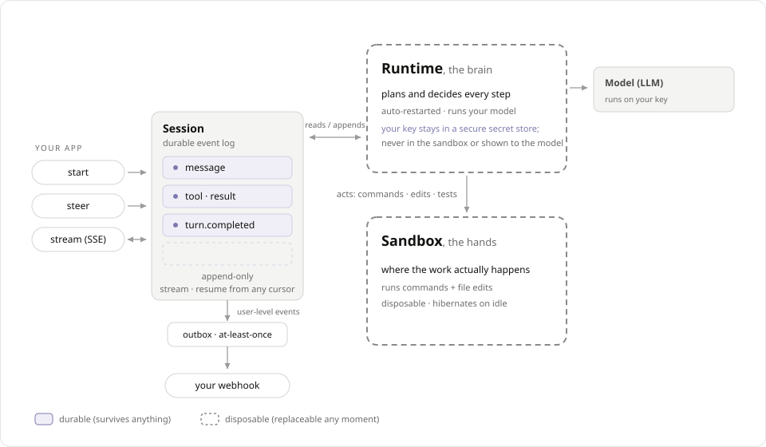

Show HN draft
Run background agents as durable sessions.
Define an agent, start a session, stream its ordered event log, steer it with new input, and receive signed webhooks when results commit.
Your app handles product events. OpenComputer handles the run.
A background agent is not one model call. It is supervision, streaming, recovery, sandbox isolation, and delivery after the user closes the tab. Durable Agent Sessions put that substrate behind one API.
Proof point
The PR reviewer app has no queue, database, or resident worker.
It is a GitHub App deployed as a Cloudflare Worker. GitHub sends a PR event, the app creates an OpenComputer session, and OpenComputer calls back when the review is ready.
The app does the product-specific work
- Verify the GitHub webhook.
- Fetch PR metadata, changed files, and the diff.
- Create a Durable Agent Session with routing metadata.
- Update one sticky PR comment when OpenComputer calls back.
OpenComputer does the durable work
- Run the agent in a managed runtime.
- Let hands tools inspect the repo when available.
- Record progress and completion in the session.
- Deliver the completion webhook after the request is long gone.
What you stop rebuilding
Most of a background agent is the system around it.
API path
After the substrate, integration is small.
Create or reuse an agent. Start a session with input and webhook destinations. Stream events if a user is watching. Handle the callback if no one is.
const session = await oc.sessions.create({
agent: process.env.OPENCOMPUTER_AGENT_ID,
input: buildReviewTask(pr),
idempotencyKey: githubDeliveryId,
metadata: {
source: "github-pr-review",
owner, repo, pullNumber, headSha
},
destinations: [{
url: `${PUBLIC_URL}/webhooks/opencomputer`,
types: ["turn.completed"]
}]
});app.post("/webhooks/opencomputer", async (c) => {
const { sessionId } = await c.req.json();
const session = await oc.sessions.get(sessionId);
const route = parseMetadata(session.snapshot.metadata);
const result = await session.result();
await github.upsertStickyIssueComment({
issueNumber: route.pullNumber,
body: markdownFrom(result)
});
});Trust boundary
Brain and hands keep credentials away from generated code.
The agent loop and model calls run separately from the files and commands the agent creates. The hands sandbox can inspect and execute; model keys and platform authority stay out of it.

Responsibility split
The app stays specific. The substrate stays reusable.
You write
- Product webhook handlers
- Agent prompt and model choice
- UI that renders session events
- Webhook receiver and idempotent side effects
OpenComputer runs
- Runtime loop and sandbox lifecycle
- Ordered event log and SSE replay
- Wakeups, leases, deadlines, and recovery
- Signed webhook delivery and brain/hands isolation
Show HN summary
OpenComputer Background Agents: durable sessions for agents that keep working after the request ends.
We built a PR-review GitHub App on Durable Agent Sessions. The app is a small serverless webhook handler: it fetches PR context, starts an OpenComputer session, and updates a PR comment when the session completion webhook arrives. No local queue, database, resident worker, or polling loop.